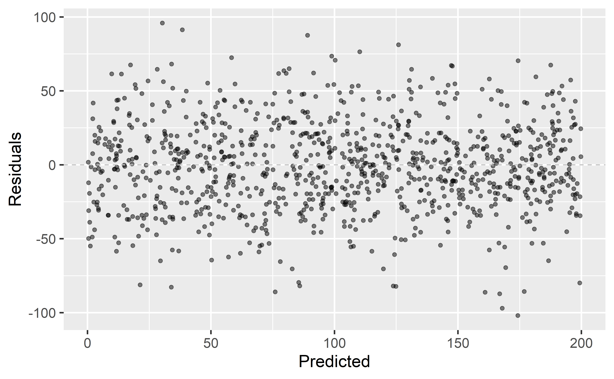
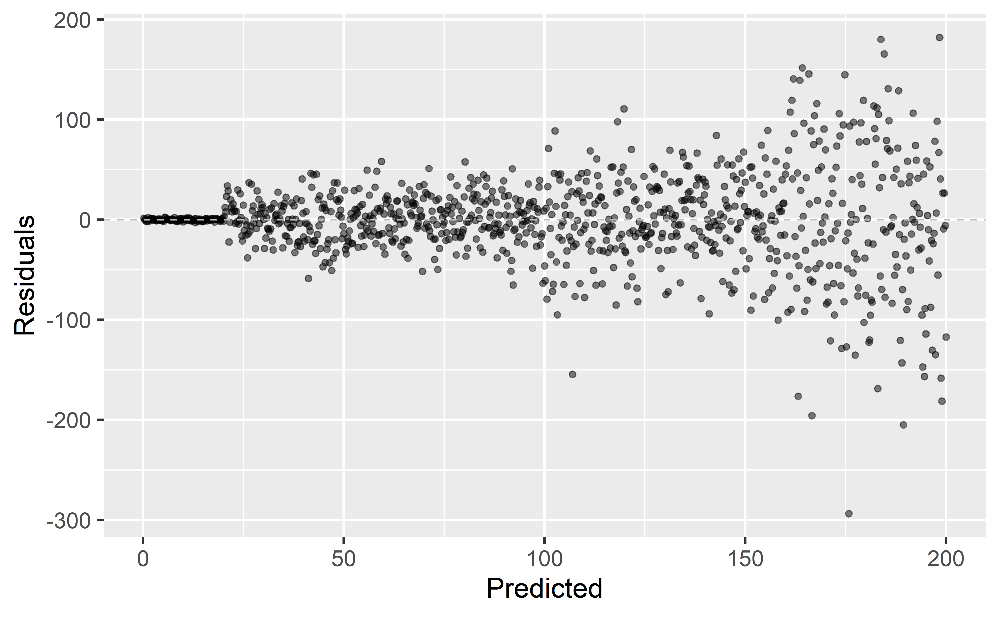
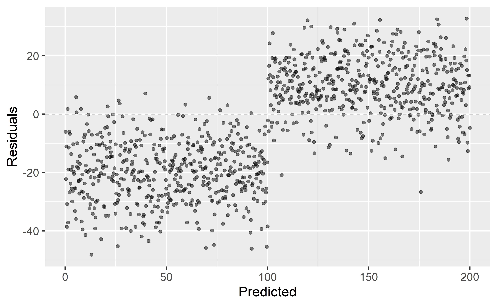
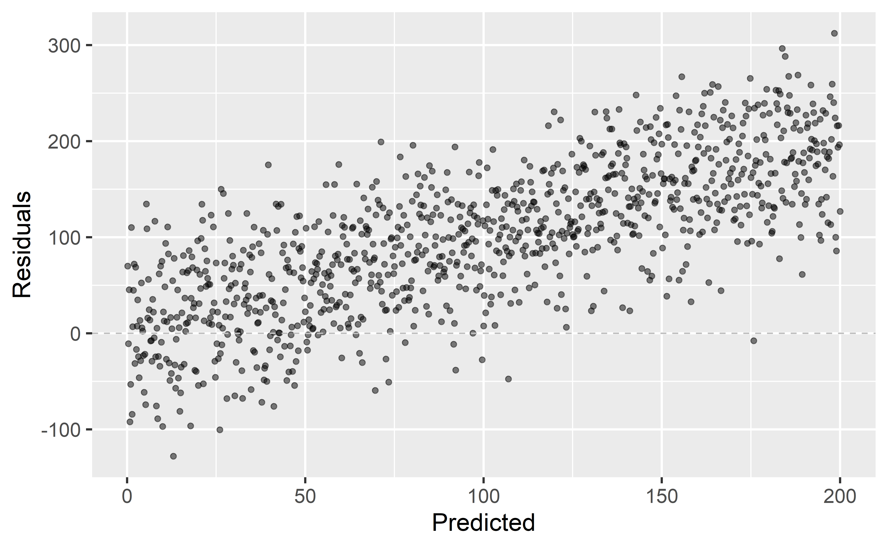
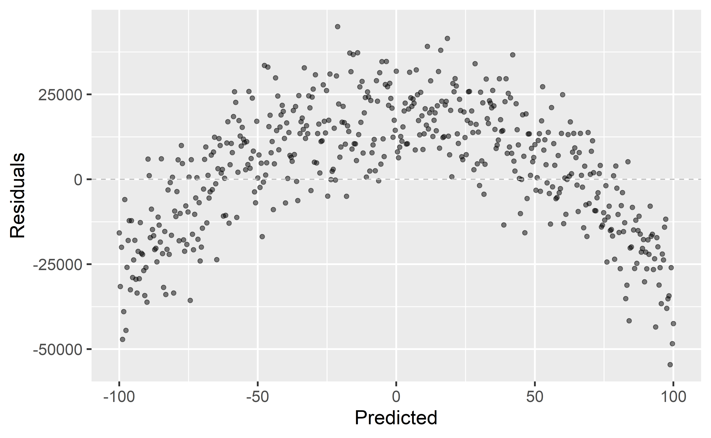
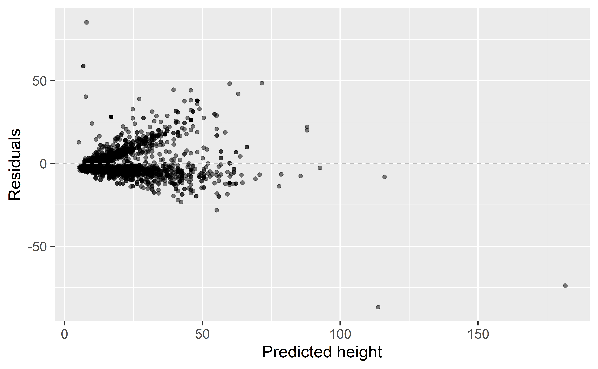
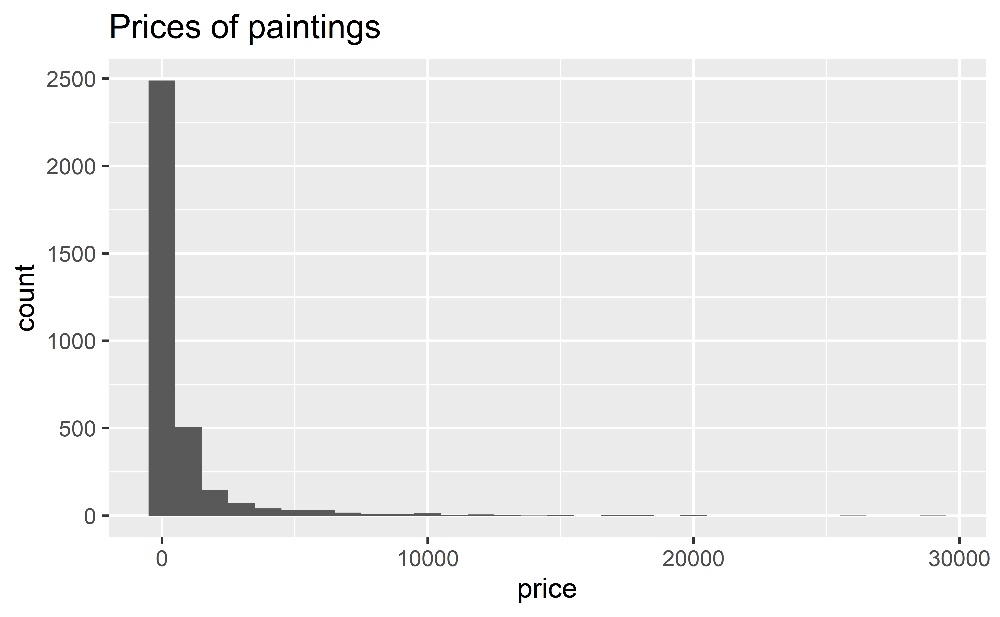
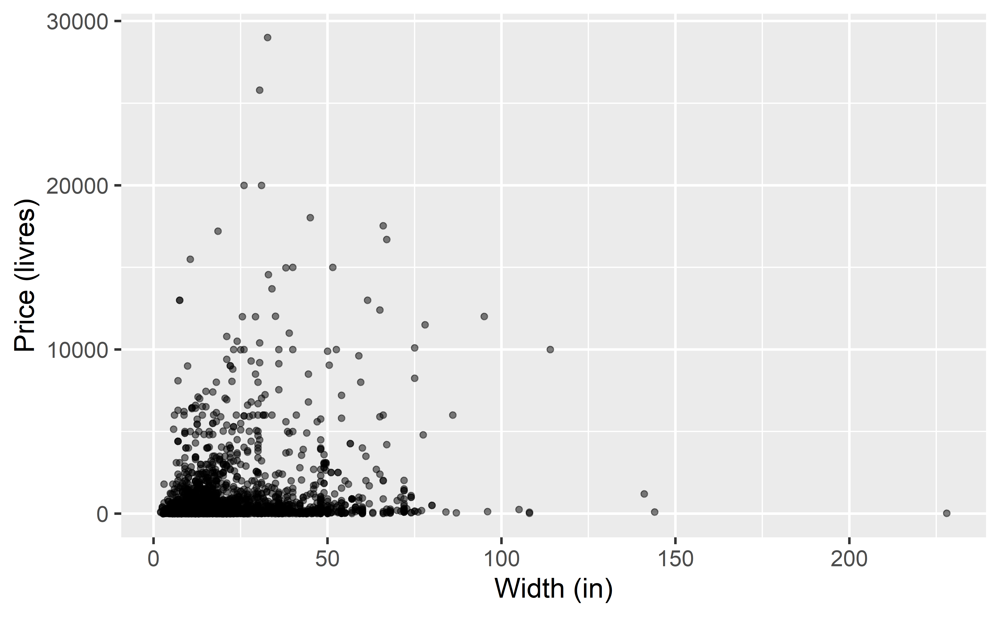
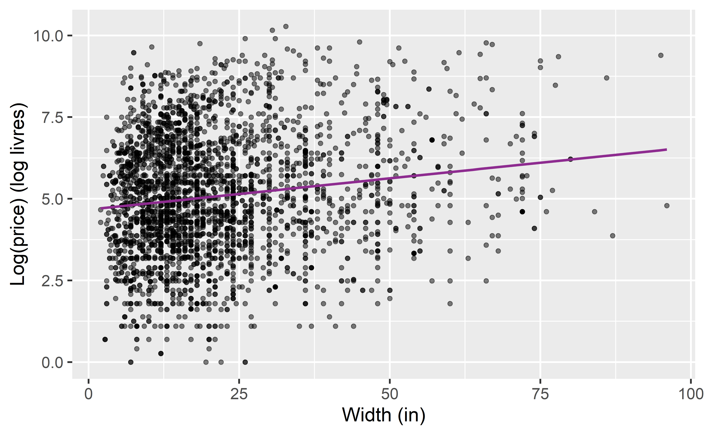

Modeling non-linear relationships
Data Science in a Box
layout: true
class: middle
Model checking
Data: Paris Paintings
pp <- read_csv("data/paris-paintings.csv", na = c("n/a", "", "NA"))- Number of observations: 3393
- Number of variables: 61
“Linear” models
- We’re fitting a “linear” model, which assumes a linear relationship between our explanatory and response variables.
- But how do we assess this?
Graphical diagnostic: residuals plot
.panelset[ .panel[.panel-name[Plot]] .panel[.panel-name[Code]]]
More on augment()
glimpse(ht_wt_fit_aug)Rows: 3,135
Columns: 9
$ .rownames <chr> "1", "2", "3", "4", "5", "6", "7", "8", "9",~
$ Height_in <dbl> 37, 18, 13, 14, 14, 7, 6, 6, 15, 9, 9, 16, 1~
$ Width_in <dbl> 29.5, 14.0, 16.0, 18.0, 18.0, 10.0, 13.0, 13~
$ .fitted <dbl> 26.65490, 14.55256, 16.11415, 17.67574, 17.6~
$ .resid <dbl> 10.3451004, 3.4474447, -3.1141481, -3.675740~
$ .hat <dbl> 0.0003991488, 0.0003961825, 0.0003611963, 0.~
$ .sigma <dbl> 8.303538, 8.305367, 8.305409, 8.305336, 8.30~
$ .cooksd <dbl> 3.099689e-04, 3.416655e-05, 2.541574e-05, 3.~
$ .std.resid <dbl> 1.24600543, 0.41522347, -0.37507338, -0.4427~Looking for…
- Residuals distributed randomly around 0
- With no visible pattern along the x or y axes

Not looking for…
.large[ Fan shapes]

Not looking for…
.large[ Groups of patterns]

Not looking for…
.large[ Residuals correlated with predicted values]

Not looking for…
.large[ Any patterns!]

.question[ What patterns does the residuals plot reveal that should make us question whether a linear model is a good fit for modeling the relationship between height and width of paintings?]

class: middle
Exploring linearity
Data: Paris Paintings

Price vs. width

Focus on paintings with Width_in < 100
That is, paintings with width < 2.54 m
pp_wt_lt_100 <- pp %>%
filter(Width_in < 100)Price vs. width
.question[ Which plot shows a more linear relationship?]
.small[]
Price vs. width, residuals
.question[ Which plot shows a residuals that are uncorrelated with predicted values from the model? Also, what is the unit of the residuals?]
.pull-left[] .pull-right[]
Transforming the data
- We saw that
pricehas a right-skewed distribution, and the relationship between price and width of painting is non-linear.
| - In these situations a transformation applied to the response variable may be useful. |
|---|
| - In order to decide which transformation to use, we should examine the distribution of the response variable. |
- The extremely right skewed distribution suggests that a log transformation may be useful.
- log = natural log, \(ln\)
- Default base of the
logfunction in R is the natural log:
log(x, base = exp(1))
Logged price vs. width
.question[ How do we interpret the slope of this model?]

Models with log transformation
linear_reg() %>%
set_engine("lm") %>%
fit(log(price) ~ Width_in, data = pp_wt_lt_100) %>%
tidy()# A tibble: 2 x 5
term estimate std.error statistic p.value
<chr> <dbl> <dbl> <dbl> <dbl>
1 (Intercept) 4.67 0.0585 79.9 0
2 Width_in 0.0192 0.00226 8.48 3.36e-17Interpreting the slope
\[ \widehat{log(price)} = 4.67 + 0.0192 Width \]
| - For each additional inch the painting is wider, the log price of the painting is expected to be higher, on average, by 0.0192 livres. |
|---|
| - which is not a very useful statement… |
Working with logs
- Subtraction and logs: \(log(a) − log(b) = log(a / b)\)
| - Natural logarithm: \(e^{log(x)} = x\) |
|---|
| - We can use these identities to “undo” the log transformation |
Interpreting the slope
The slope coefficient for the log transformed model is 0.0192, meaning the log price difference between paintings whose widths are one inch apart is predicted to be 0.0192 log livres.
–
.question[ Using this information, and properties of logs that we just reviewed, fill in the blanks in the following alternate interpretation of the slope:]
For each additional inch the painting is wider, the price of the painting is expected to be
___, on average, by a factor of___.
\[ log(\text{price for width x+1}) - log(\text{price for width x}) = 0.0192 \]
–
\[ log\left(\frac{\text{price for width x+1}}{\text{price for width x}}\right) = 0.0192 \]
–
\[ e^{log\left(\frac{\text{price for width x+1}}{\text{price for width x}}\right)} = e^{0.0192} \]
–
\[ \frac{\text{price for width x+1}}{\text{price for width x}} \approx 1.02 \]
–
For each additional inch the painting is wider, the price of the painting is expected to be higher, on average, by a factor of 1.02.
Recap
- Non-constant variance is one of the most common model violations, however it is usually fixable by transforming the response (y) variable.
| - The most common transformation when the response variable is right skewed is the log transform: \(log(y)\), especially useful when the response variable is (extremely) right skewed. |
|---|
| - This transformation is also useful for variance stabilization. |
- When using a log transformation on the response variable the interpretation of the slope changes: “For each unit increase in x, y is expected on average to be higher/lower
by a factor of \(e^{b_1}\).”
| - Another useful transformation is the square root: \(\sqrt{y}\), especially useful when the response variable is counts. |
Transform, or learn more?
- Data transformations may also be useful when the relationship is non-linear
- However in those cases a polynomial regression may be more appropriate
- This is beyond the scope of this course, but you’re welcomed to try it for your final project, and I’d be happy to provide further guidance
Aside: when \(y = 0\)
In some cases the value of the response variable might be 0, and
log(0)[1] -Inf–
The trick is to add a very small number to the value of the response variable for these cases so that the log function can still be applied:
log(0 + 0.00001)[1] -11.51293